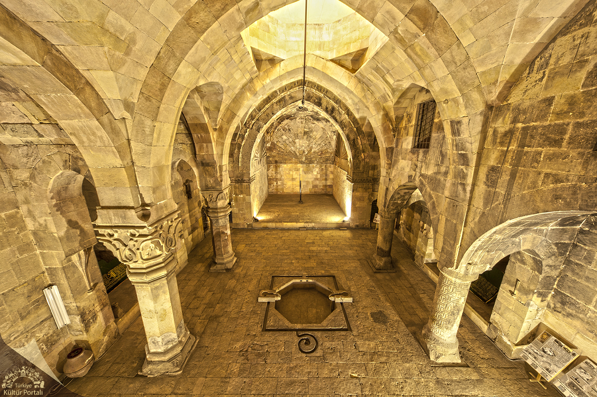

Divriği Ulu Camii ve Darüşşifası olarak bilinen bu yapı topluluğu, cami, darüşşifa ve türbeden meydana gelen bir külliyedir. Anadolu Selçuklu Devleti’ne bağlı Mengücek Beyliği döneminde inşa edilmiştir. Ulu Cami, Süleyman Şah’ın oğlu Ahmet Şah tarafından yaptırılmıştır. 1228 yılında başlanıp 1243 tarihinde tamamlanan yapı kompleksinin Baş Mimarı Muğis oğlu Ahlatlı Hürrem Şah'tır. Dârüşşifa ise aynı tarihte, Ahmed Şah'ın eşi ve Erzincan beyi Fahreddin Behramşah’ın kızı olan Turan Melek tarafından Ahlatlı Muğis oğlu Hürrem Şah adlı bir mimara yaptırılmıştır.
MİRASIMIZ
DİVRİĞİ ULU CAMİİ ve DARÜŞŞİFASI
Başta kapılar ve sütunlar olmak üzere, külliyenin bir çok yerinde bulunan, Ahlatlı ve Tiflisli ustaların ellerinden çıkan, taş işçiliğinin en nadide ve en ince örneklerini yansıtan harikulade motifler tüm dünyanın ilgi ve dikkatini çekmektedir. Bu eseri farklı ve özgün kılan bir diğer özellik de, uzaktan bakıldığında simetrik olduğu düşünülen, fakat özünde asimetrik olan bezemelerde yer alan on binlerce motifin hiç birinin bir daha kendini tekrar etmemesi; kâinattaki farklı varlıkların muhteşem bir ahenk ve denge içerisinde olduklarının taşa nakşedilerek gözler önüne serilmesidir. Mimari üslubu, süsleme ve örtü sistemlerinin dengeli ve uyumlu tasarımıyla önem kazanan bu şaheser, dünyada, görülmeye değer eserler listesinin başında yer almaktadır. Bu büyüleyici eseri anlatmaya sözlerin yetersiz kalacağını Evliya Çelebi yüzyıllar önce şöyle ifade etmiştir: "Methinde diller kısır, kalem kırıktır". Görenleri kendisine hayran bırakan bu muhteşem abide eser, sanat tarihçileri tarafından "Divriği mucizesi", "Anadolu’nun Elhamrası" gibi ifadelerle tanımlanmıştır. 1985 yılında UNESCO tarafından "Dünya Kültür Mirası" listesine alınan, İslam mimarisinin bu başyapıtı, aynı zamanda T.C. Cumhurbaşkanlığı makamının koruması altındadır.
Ulu Cami, kuzey-güney doğrultusunda dikdörtgen plânlı ve tümüyle kesme taşlarla yapılmış bir yapıdır. Camiye giriş çıkışı sağlayan kuzey, batı ve doğu yönlerde üç ayrı anıt kapı yer almaktadır. İç mekân, sekizgen payeleri birleştiren çift yönlü sivri kemerlerle farklı genişlikte yirmi beş birime ayrılmıştır. Büyük boyutlu mihrap önü dilimli, orta bölüm ise oval birer kubbeyle örtülüdür. Sekizgen aydınlatma feneri bulunan orta bölümün kubbesi sekizgen piramidal külâhla kaplıdır. Diğer birimlerin örtü sistemini yıldız, artı ve bileşik tonozlar oluşturmuştur. Güneydoğudaki şah mahfili de bileşik tonoz örtüsü ile dikkati çekmektedir.

Caminin iç mekânı, kapılara nazaran sadelik içermektedir. İbadet eden insanların dikkatinin dağılmaması ve ibadetteki huşu ve huzurun bozulmaması için sadeliğin tercih edildiğinden söz etmek mümkündür. Caminin tekstil kapı tarafında kalan sütunlar Kanuni Sultan Süleyman döneminde Mimar Sinan tarafından güçlendirilmiş sütunlardır. Şah kapısı tarafında kalan ince sütunlar orijinaldir. Caminin iç kısmında, cennet kapısının arka yüzünde tek parça taştan oyulmuş iki adet emanet sandığı bulunmaktadır. İnsanlar bir yere giderken değerli eşyalarını ve ziynetlerini emanet sandığına bırakırlar döndüklerinde ise bıraktıkları gibi bulurlardı. Bununla beraber bir de sadaka taşı bulunmaktadır. Hayırseverler sadakalarını bu taşın içine bırakır, ihtiyaç sahipleri de içinden ihtiyacı kadarını alırdı. Bu uygulama, “Bir elin verdiğini öbür elin bilmemesi” olarak ifade edilen, yoksulun incitilmemesi ve onurunun korunmasını esas alan bir duyarlılığın yansımasıdır.

